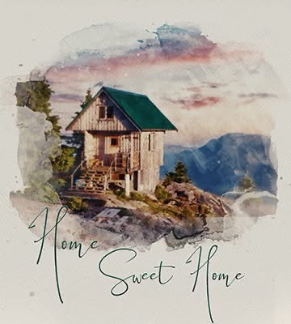

Welcome to the Studio—where stories live
(This is where stories, updates, and thoughts from The Memory House will appear.)
* * *
The Treasure — A Portrait of What Once Was
One of my recent house portrait clients — a friendly man named Jack — asked me to recreate a cabin where he had spent every summer as a child. It had burned down when he was just thirteen.
Jack shared how the cabin had become something mythical in his mind, especially after his father passed away ten months ago at age 73. The two of them had shared countless summer nights on the porch, laughing and eating homemade peanut brittle as the sun went down.
There were no good photos of the place. Just fragments, memories, and a deep feeling. So Jack described it all to me — right down to the angle of the roof, the stairs leading up, and the kind of sunset that always seemed to show up at just the right moment.
When Jack received the finished portrait, he said it was like finding a long-lost treasure. He told me he could not be more grateful. 
Do you have a friend or relative with a place they still carry in their heart?
Let’s recreate it — and make their memories visible again.
* * *
What a Realtor Told Me
One of my early commissions came from a realtor I had never worked with before.
She had just closed a deal and said:
"I want to give them something better than a bottle of wine."
I asked about the house.
She sent me reference photos, closing details, and even a few notes from the walk-through.
It was a modest home—but it was their first.
A place they had saved for, dreamed about, and finally owned.
When I delivered the portrait, the realtor was stunned.
She told me:
"I’ve given a lot of gifts in this business. But none have ever felt this meaningful to my clients."
That stuck with me. Because it wasn’t about the gift itself.
It was about what the gift
remembered
.
A housewarming present fades.
But a painting that honors someone’s
first home
—that stays.
It hangs on the wall. It holds a moment. It becomes part of the story.
And here’s what’s even more remarkable:
Every time that artwork is noticed or mentioned by a friend, family member, or guest,
the story of the house is shared—
and so is the name of the person who gave the gift.
That realtor’s gesture became a part of the home’s legacy.
Not tucked in a drawer. Not forgotten in a box.
But displayed. Admired. Remembered.
Because when a gift is personal, it becomes permanent.
And in this case, it became a kind of perpetual calling card for that realtor—framed, emotional, and unforgettable.
* * *
That Little Tree in the Corner
There’s a tree I painted once—a small, crooked maple barely taller than the mailbox.
Wasn’t prominent in the photo the client sent. In fact, it would've been easy to overlook. But when I asked about it, her reply was immediate:
"Oh—please don’t forget that tree. My daughter planted it the day we moved in. She was six."
Suddenly, that little tree wasn’t just landscaping—it was memory. A quiet footprint of time. It made the portrait personal. Intimate. Alive.
These are the kinds of things I look for. A flower bed planted by a grandmother. A wind chime bought on a honeymoon. A porch swing that held hours of conversation.
Because when someone commissions a portrait of their home, it’s not just about the architecture. It’s about what happened there —and the tiny details that hold those stories.
That little tree is why I ask questions.
It’s why I listen before I paint.
And it’s why no two pieces I make are ever the same.
* * *
It Started With a Goodbye
The first house portrait I ever made wasn’t meant to start a business.
It was a gift—a parting gesture for good friends of mine who had lived in their home for over 25 years. The house had seen them through births, graduations, holidays, and quiet mornings on the porch. When it came time to say goodbye, I could tell they didn’t want a photo, but something more. Something that felt like memory.
So I painted it.
Not just the walls and windows, but the light in the kitchen where they always sat for coffee. The oak tree in the yard they planted the year their daughter was born. The way the shadows fell in the afternoon.
When I gave them the piece, they were both overcome with emotion. That moment stuck with me. It still does.
That’s when I realized: this isn’t just art.
It’s remembrance. Tribute. Closure. Celebration.
It’s a way of honoring the homes that shaped us.
And that’s how The Memory House began.